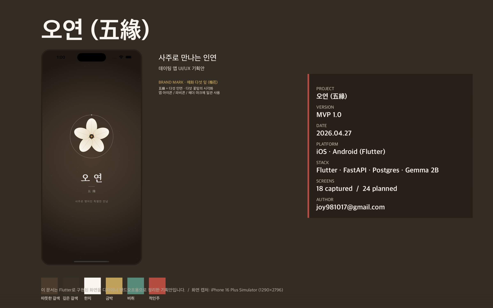
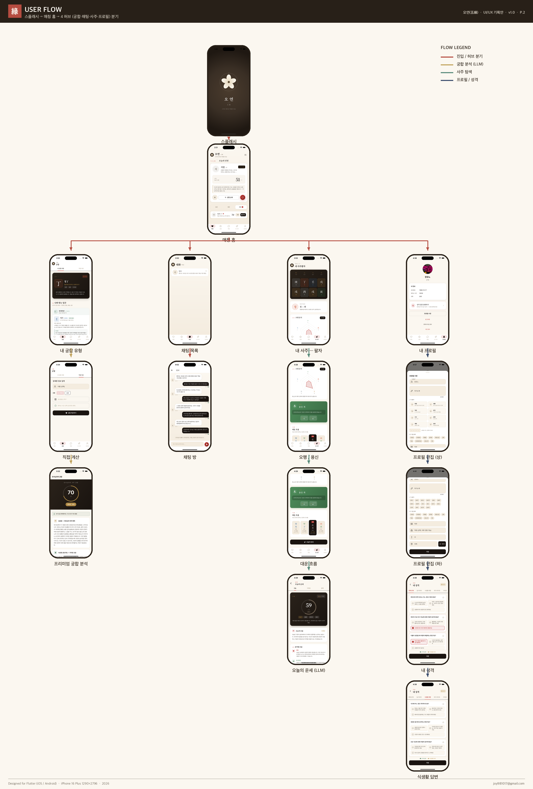
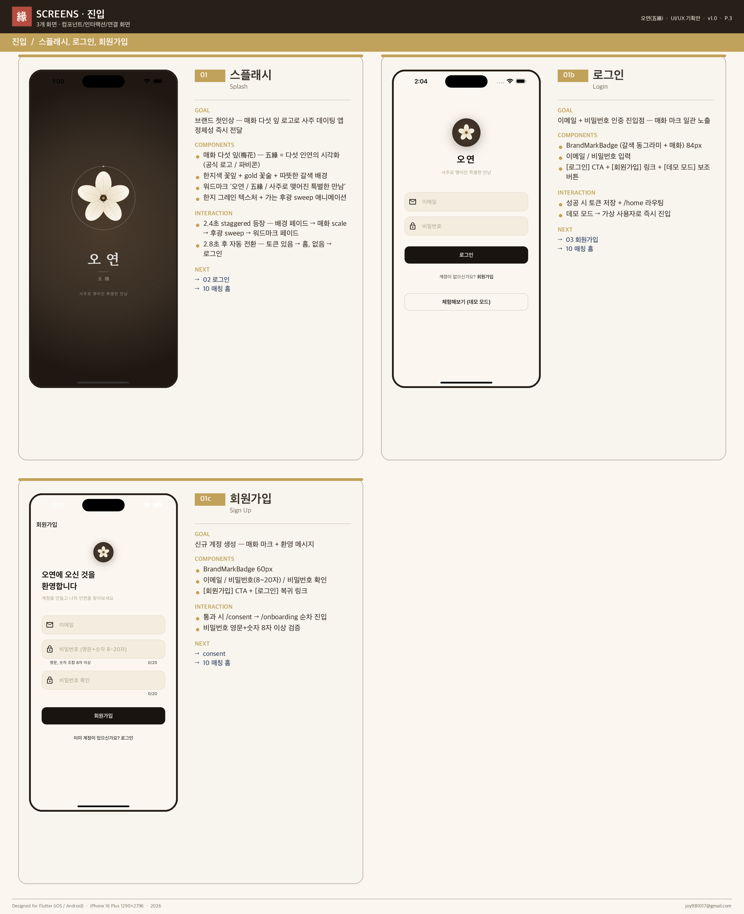
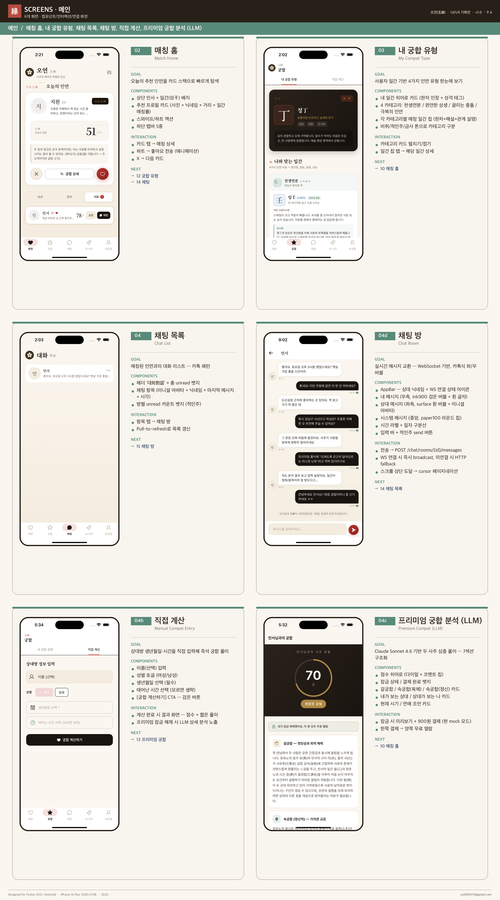
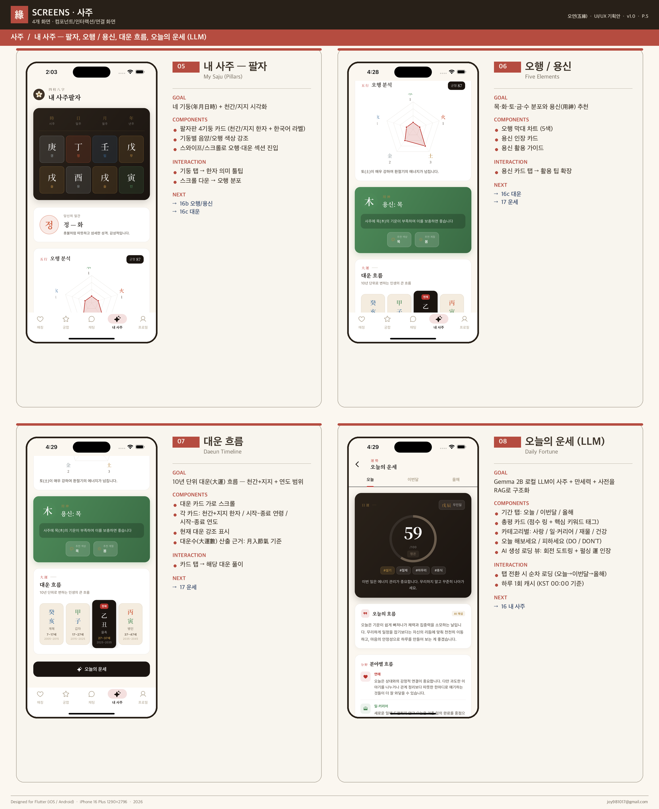
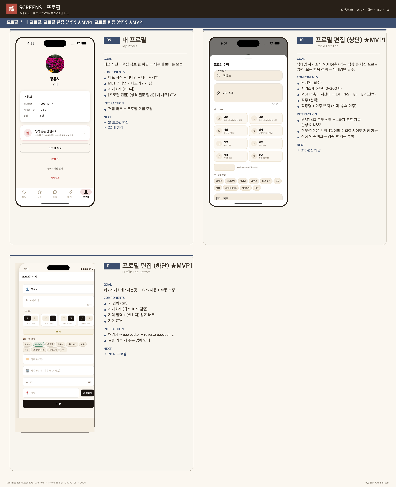
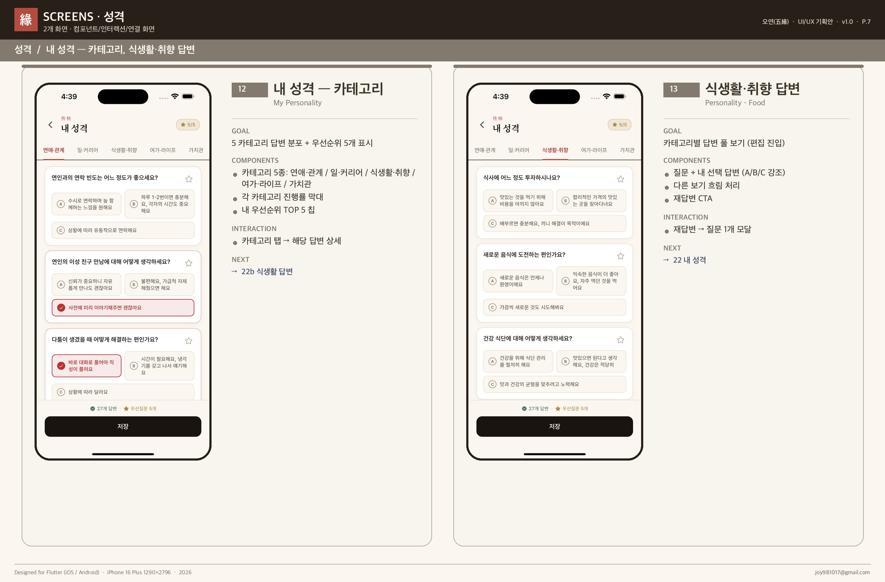
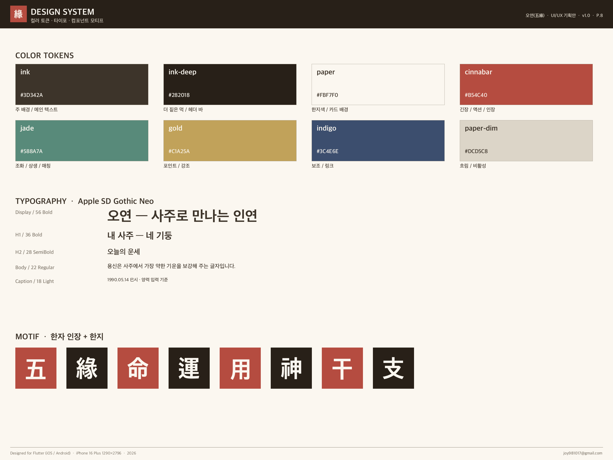

매일 오후 5~6시, 사주 궁합이 가장 좋은 단 한 명을 추천. 겉/속/성격 3축 + LLM 자연어 해설. Flutter 단일 코드베이스로 iOS·Android·Web을 동시에 지원하며, 먹·한지·인장 모티프로 사주의 문화적 무게를 UI로 전달합니다.
무한 스와이프 매칭의 피로감을 거부한 1일 1매칭 모델로 설계한 사주 기반 소개팅 앱입니다. 천간 / 지지 / 지장간 / 60갑자 / 오행 상생상극 / 대운까지 사주 도메인을 백엔드에 풀 구현하고, Anthropic Claude API로 "왜 잘 맞는가"를 자연어로 설명합니다. 만 19세 인증 · 계정 삭제 · 신고/차단 · 프로필 사진 수동 심사 등 앱스토어 정책을 사전 준수했습니다.
먹빛(ink) · 한지(paper) · 적인주(cinnabar) · 비취(jade) · 금사(gold) · 청람(indigo) 6개 컬러 토큰과 한자 인장 모티프로 디자인 시스템을 구성했습니다. Apple SD Gothic Neo 타이포 (Display 56 / H1 36 / Body 22). 8페이지 디자인 핸드오프 PDF로 산출.








FastAPI · SQLAlchemy · PostgreSQL · WebSocket · JWT · slowapi
Flutter (iOS / Android / Web) · Provider · web_socket_channel · Phosphor Icons
Anthropic Claude API (claude-sonnet-4)
Docker Compose · 자체 디자인 시스템 (먹·한지·인장)